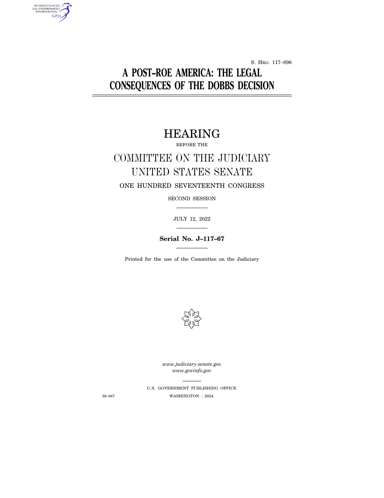
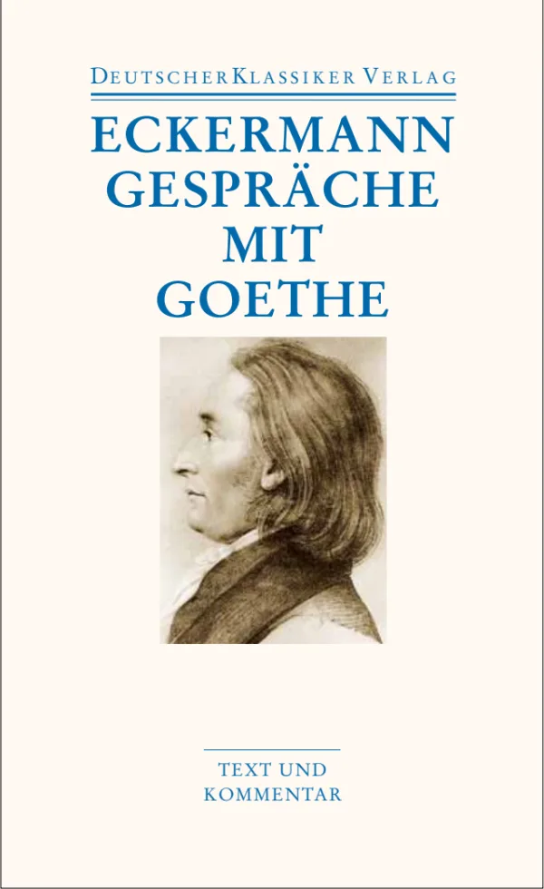
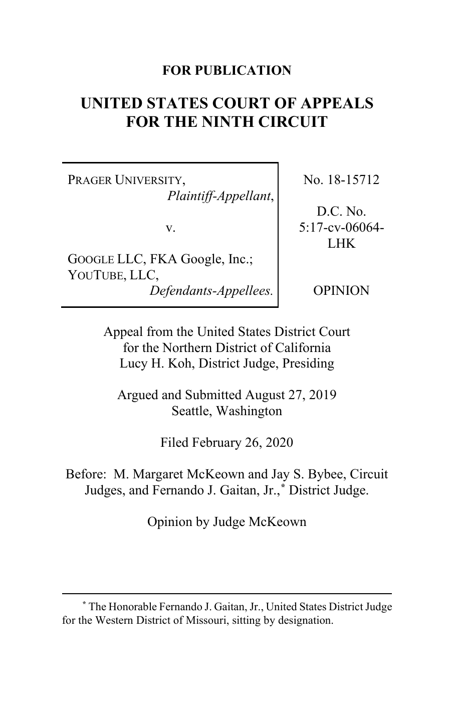
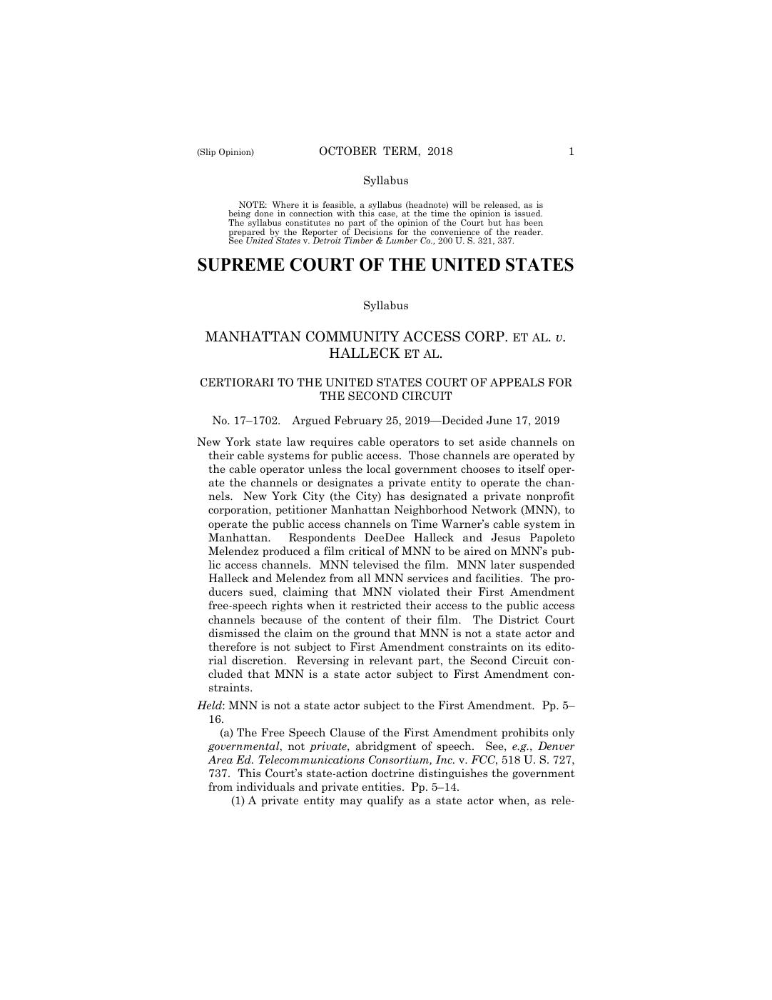
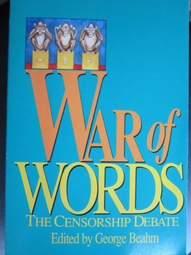
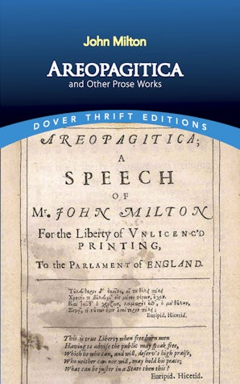

38:23 · 10 OPERE
La collaborazione dello Stato nella soppressione della libertà di espressione.
Il filo del discorso
Una sospensione della possibilità di pubblicare sul proprio canale diventa per il relatore l’occasione per discutere libertà di parola, regole delle piattaforme e responsabilità dello Stato. Il contributo collega la moderazione dei contenuti alla concentrazione dei mezzi di comunicazione e alla critica della ragione ridotta a strumento di potere. Pessoa, Le Bon e la tradizione di Francoforte offrono i primi riferimenti; un passo dei colloqui di Goethe con Eckermann introduce poi il contrasto fra oggettività e soggettività. Il relatore richiama polemiche statunitensi del 2022 intorno a definizioni di donna, identità e linguaggio, passando dal documentario What Is a Woman? a due distinti contesti parlamentari. La parte giuridica si concentra sulla decisione Prager University v. Google del 2020 e sul precedente Manhattan Community Access v. Halleck del 2019: il relatore contesta la distinzione fra attori privati e Stato come limite all’applicazione del Primo Emendamento. Una raccolta sulla censura, Areopagitica e un episodio di Blackadder accompagnano la discussione sul dissenso e sulla coerenza degli argomenti. La conclusione rivendica il dovere democratico di proteggere la parola anche quando il potere economico ne controlla gli spazi. La scheda distingue il contenuto dei documenti giudiziari dalla loro critica normativa, gli aneddoti dalle prove disponibili e i giudizi polemici sulle persone da valutazioni documentate.
I libri nel discorso

Psicologia delle folle
Copertina: Apogeo · 2025 · nuova traduzione dell’edizione integrale originale
Immagine autentica dell’opera, controllata visivamente; l’edizione di riferimento non è attribuita al filmato.
Le Bon e il saggio sulla psicologia delle masse, fine Ottocento, espliciti.
Passaggio 3:53 ↗ · Fonti e libro ↗What Is a Woman?
Immagine ufficiale del documentario, 2022: Immagine promozionale del documentario statunitense del 2022, regia Justin Folk, presentato da Matt Walsh, The Daily Wire. Fornita nella pagina ufficiale del produttore; nessun ISBN librario.
Fotografia promozionale ufficiale con Matt Walsh, occhiali e barba, in ambiente urbano. Non è la copertina di un libro, né una prova dell’integralità o neutralità delle interviste montate nel film. Il titolo individua un documentario politico con una propria impostazione editoriale, distinto dalle audizioni del Senato citate separatamente.
Documentario recente, titolo inglese What Is a Woman? e domanda centrale espliciti.
Passaggio 6:13 ↗ · Fonti e libro ↗
A Post-Roe America: The Legal Consequences of the Dobbs Decision
Identificazione probabile
Frontespizio del resoconto: audizione 2022, stampa 2024: Frontespizio del resoconto dell’audizione del 12 luglio 2022, S. Hrg. 117-896, Serial J-117-67, U.S. Government Publishing Office, Washington 2024. Il 2024 è la stampa del resoconto e non la data dell’audizione.
Prima pagina autentica del PDF parlamentare, con titolo, commissione, data dell’audizione, numero seriale e anno di stampa. Il relatore non pronuncia il titolo ufficiale né il nome Bridges: l’identificazione della clip resta probabile e non certifica un fotogramma non osservato. Il dialogo non appartiene al documentario What Is a Woman? e non è l’audizione di conferma di Ketanji Brown Jackson.
Docente di Berkeley e senatore descritti, senza nomi; compatibile con Bridges e Hawley il 12 luglio 2022, riscontro nel resoconto ufficiale.
Passaggio 7:34 ↗ · Fonti e libro ↗
Colloqui con Goethe (Gespräche mit Goethe in den letzten Jahren seines Lebens)
Copertina: Copertina tedesca Gespräche mit Goethe, Deutscher Klassiker Verlag, DKV Taschenbuch 50, curatore Christoph Michel con Hans Grüters, 1390 pagine, ISBN 9783618680505; prima uscita di questa edizione 23 agosto 2011, terza tiratura 19 settembre 2023.
Copertina autentica crema e azzurra fornita dall’editore, con titolo, nome Eckermann, ritratto e dicitura Text und Kommentar. È un’edizione tedesca completa con commento, non una traduzione italiana identificata nel video. La scheda editoriale sottolinea anche la mediazione letteraria di Eckermann: i colloqui non sono registrazioni sonore di Goethe.
Goethe nei colloqui con Eckermann e passo sul rapporto fra soggettività e decadenza espliciti; data ricostruita 29 gennaio 1826.
Passaggio 14:50 ↗ · Fonti e libro ↗
Prager University v. Google LLC e YouTube LLC, No. 18-15712
Prima pagina della sentenza: Prager, 2020: Prima pagina originale dell’opinion del Ninth Circuit del 26 febbraio 2020, No. 18-15712, fascicolo ufficiale di 16 pagine. Non è una monografia né una sentenza della Corte Suprema.
Rendering integrale della pagina iniziale del PDF ufficiale, con corte, parti, numero, data e collegio. La scheda distingue l’opinion dal riassunto di servizio delle pagine successive, che dichiara di non far parte della decisione. Nessun editore commerciale o ISBN inventato.
Prager University contro la piattaforma, 2020, e contenuto del principio giudiziario espliciti.
Passaggio 18:30 ↗ · Fonti e libro ↗
Manhattan Community Access Corp. v. Halleck, No. 17-1702
Fascicolo ufficiale: syllabus di Halleck, 2019: Prima pagina del fascicolo ufficiale della Corte Suprema, 17 giugno 2019, No. 17-1702, 39 pagine comprendenti syllabus, opinion e dissenso. La pagina riprodotta è l’inizio del syllabus, non l’inizio della motivazione.
Rendering completo della prima pagina del PDF della Corte Suprema: titolo delle parti, numero e data leggibili. Il syllabus dichiara espressamente di non essere parte dell’opinion; maggioranza e dissenso sono documenti diversi nello stesso fascicolo. L’immagine non è una copertina libraria.
Manhattan Community Access Corp. v. Halleck, 2019, richiamata come precedente; nomi ricostruiti con la sentenza ufficiale.
Passaggio 19:06 ↗ · Fonti e libro ↗Ink and Incapability (Blackadder the Third, episodio 2)
Identificazione probabile
Fotografia dell’episodio di Blackadder, 1987: Fotografia d’archivio dell’episodio BBC Ink and Incapability, terza serie, episodio 2, prima trasmissione 24 settembre 1987. Nella scena Hugh Laurie come principe reggente e Robbie Coltrane come Samuel Johnson.
Immagine autentica collegata alla scheda dell’episodio, con i personaggi in costume del principe e di Johnson. Non è la copertina di un dizionario o di un libro di sceneggiature, e non mostra Baldrick mentre pronuncia la battuta. La definizione documentata è dog: not a cat, mentre il relatore la ricorda invertendo gli animali.
Blackadder e Baldrick espliciti; episodio identificato probabilmente dalla battuta sul dizionario, animali invertiti nel ricordo orale.
Passaggio 21:33 ↗ · Fonti e libro ↗
War of Words: The Censorship Debate
Identificazione probabile
Copertina: Copertina dell’edizione Andrews and McMeel, Kansas City, 1993, a cura di George Beahm, illustrazioni di Kenny Ray Linkous, 430 pagine nei riscontri bibliografici, ISBN 9780836280159.
Fotografia autentica della copertina azzurra con tre scimmie, titolo War of Words, sottotitolo The Censorship Debate e curatore. La corrispondenza con anno e argomento del volume descritto nel filmato è plausibile, ma senza fotogramma osservato o titolo inequivoco resta probabile. Non si attribuiscono automaticamente a Beahm o a un saggista determinato le parole sui censori lette nel video, il cui autore e pagina restano da accertare.
Raccolta sul dibattito della censura, edizione 1993, provenienza da vendita bibliotecaria; War of Words è candidato coerente, titolo e curatore non pronunciati inequivocabilmente.
Passaggio 25:48 ↗ · Fonti e libro ↗
Areopagitica. Discorso per la libertà di stampa
Copertina della raccolta Areopagitica and Other Prose Works: Dover Thrift Editions · Areopagitica and Other Prose Works, 2016
Immagine ufficiale della raccolta Dover 2016: contiene il discorso Areopagitica insieme ad altri scritti di Milton. Non è attribuita al video una traduzione o un’edizione determinata.
Milton e Areopagitica espliciti, come difesa della libertà di stampa.
Passaggio 27:52 ↗ · Fonti e libro ↗
Modernità liquida
Identificazione probabile
Copertina: Laterza · i Robinson, Letture · 2011 e ristampe
Copertina autentica dell’edizione di riferimento, controllata visivamente. Non identifica l’esemplare letto o citato nel video.
Bauman e società liquida espliciti; il riferimento a questa singol’opera è probabile, non un titolo pronunciato.
Passaggio 35:24 ↗ · Fonti e libro ↗